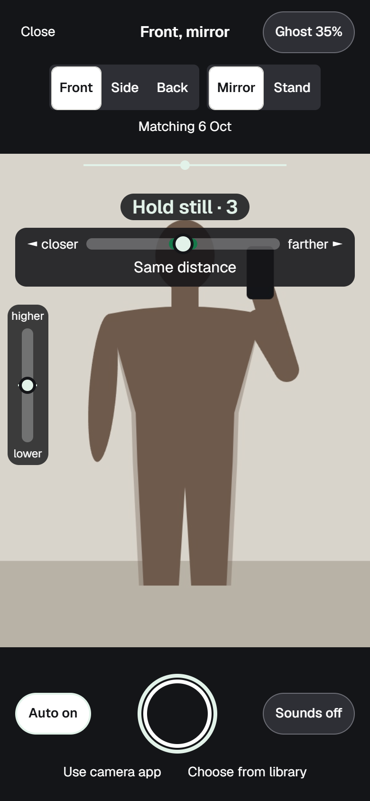
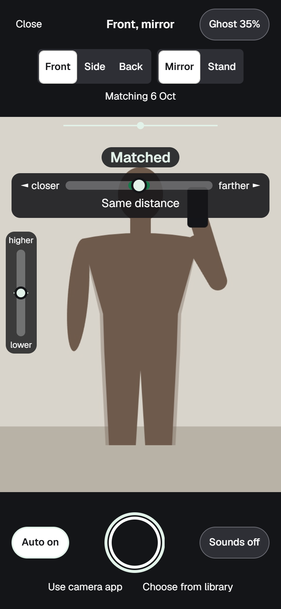

The photo it asks you to take
The same picture every time: same mirror, same spot, same phone height, same light. Then the only thing that changes between photos is you.
In front of a mirror, phone in hand
- Back camera at a full-length mirror
- Phone upright at face height, same hand
- About 1.3 m; mark where your toes go
- Same light; not right after a shower
- Head to feet in the frame
- Back photo: phone on a stand, 10 s timer
One cue at a time, until it says Matched

Raise the phone
The phone is level, but held lower than last time: your shoulders sit higher in the frame. The scale on the left shows the dot under last time's mark. One cue at a time: tilt, then height, then feet, then distance.
- Level: pitch within 1.5°
- Height: about 5 cm low
- Distance comes next

Hold still · 3
Everything matched for 0.6 s, so it counts 3 · 2 · 1 by itself. No need to reach for the shutter; the frame is taken when the phone stops moving.
- Level, height, distance
- Feet in frame
- 1.5 s countdown

Matched
Everything is green and the 6 Oct mirror photo's ghost (35%) sits on you. You can see the screen, so it stays silent; auto-capture starts the countdown. View and Mirror / Stand are switched right on this screen.
- Level
- Same phone height
- Same distance from the mirror
Twelve weeks you can compare
Same size, feet on the same line, head at the same height. The green lines run through every photo.
The same three days, hand-held. Is the waist smaller, or is the phone farther away?
Illustrated silhouettes, not real people. The three capture screens are screenshots of the app's live view (LiveView) in Mirror mode, with a drawn camera feed, a simulated level and a stubbed pose model.